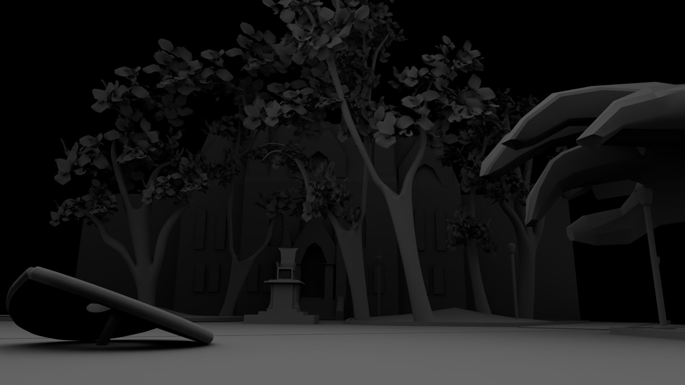
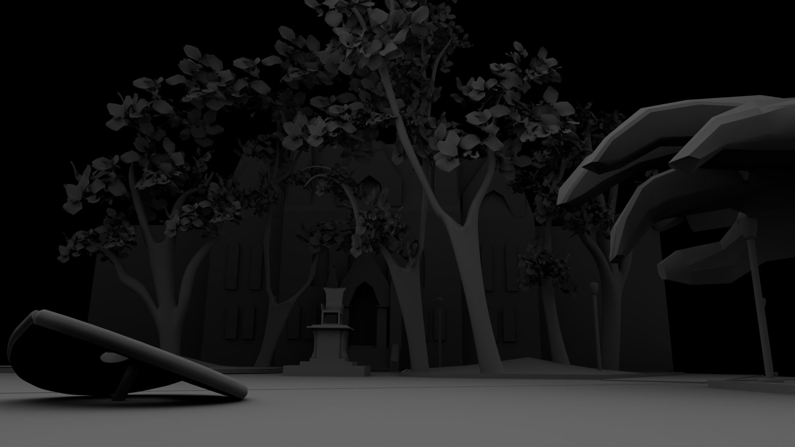

Benjamin's Button
Medium: Autodesk Maya and Adobe Substance Painter
Description: This was a series of environmental renders for 3D Modeling Class. The story I was trying to tell was that, on a spooky Halloween Night, Benjamin Franklin was resurrected by lightning strike and came to collect the Button statue on the University of Pennsylvania campus. I first learned alot from modeling off of Google Earth References to accurately depict the College Hall and green of the University of Pennsylvania campus. I also understood the fact that for environmental renders, you have to use certain techniques to establish an atmosphere without doing too much work. I finally learned how to model human anatomy to create a ghostly figure of Benjamin Franklin.
Credits: Jason Chen
 
